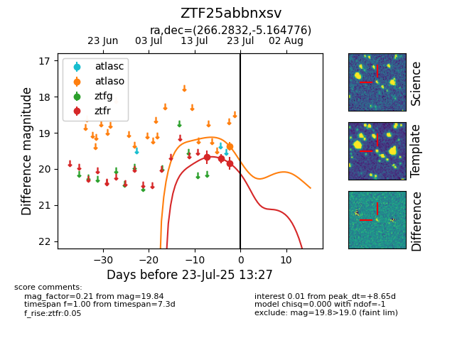

Target ZTF25abbnxsv at 2025-08-05 23:02, see:
FINK: fink-portal.org/ZTF25abbnxsv
Lasair: lasair-ztf.lsst.ac.uk/objects/ZTF25abbnxsv
ALeRCE: alerce.online/object/ZTF25abbnxsv
alt names
ZTF25abbnxsv (ztf,fink)
coordinates:
equatorial (ra, dec) = (266.2832,-5.16478)
galactic (l, b) = (20.5431,+12.22944)
photometry
last atlaso=19.38, ztfr=19.84
1 atlaso, 3 ztfr detections
